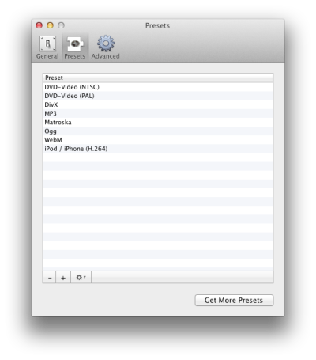
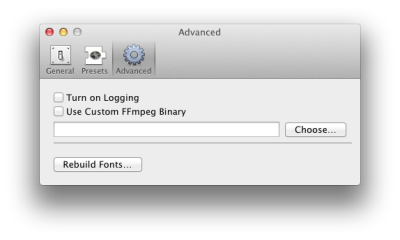

Preferences
You can change different settings in Media Converter.
General:
- Turn on or of sound effects. You might want to disable them if you're using a custom sound in the Growl preferences.
- Choose the method or location to save media files.
- The presets can be installed for one user or all users on the computer.
Presets:

- Add or remove presets to use in the main window.
- Modify settings by double-clicking them.
- Sort the list of presets in the order you like to see them in the main popup menu.
- Get new presets by going to the website.
Advanced:

- Turn on logging. Useful for finding problems. See the log in the Console application (/Applications/Utilities/Console.app).
- Use an other version of ffmpeg. (Note not all presets work with different ffmpeg versions)